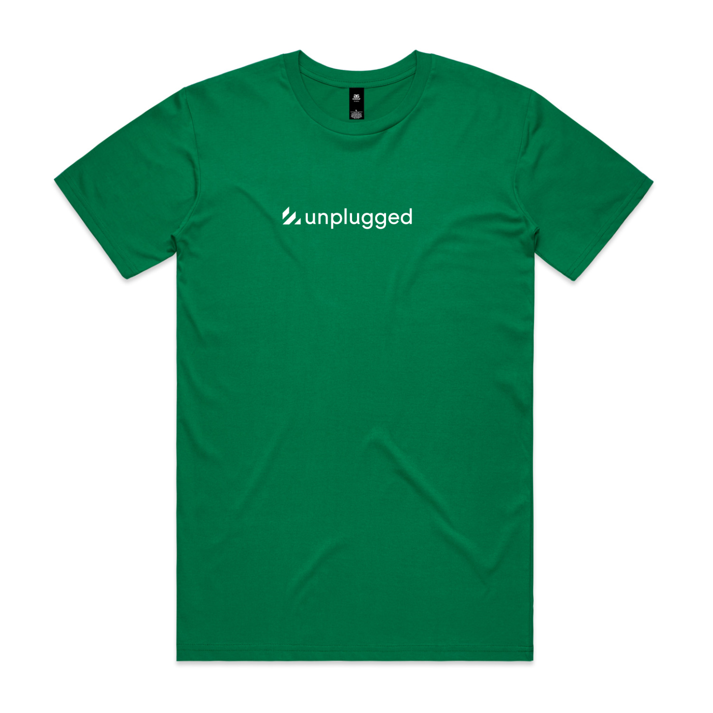
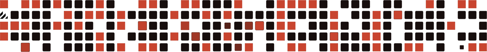

THE SELFDRIVEN SHOP
Wear your
curiosity.
For curious minds. Caring people.
And communities doing their own thing.
Be Curious.Be Caring.Be Constructive.Be Chill.
YOUR DESIGN. YOUR WAY.
Start with a little selfdriven.
The original
selfdriven · Tees & hoodies

Unplugged
unplugged · Staple Tee

Room to emerge
emergence · Tees & hoodies
Artwork previews. Choose your garment, colour and size in Screenlab.